BaIn ( Baby Info Manager)
Table of contents
- Authors
- 1. Introduction
- 2. Overall Description
- 3. External Interface Requirements
- 4. System Features
- 5. Other Nonfunctional Requirements
1. Introduction
1.1 Purpose
kiddoCare is a web application for the BaIn (Baby Info Manager) project developed by the aforementioned three students from the Faculty of Computer Science, Alexandru Ioan Cuza University. The purpose of this document is to present a detailed description, the features, as well as specify the requirements of the web application. This application will provide users (families, couples, caretakers etc.) with a useful tool to monitor and manage the resources needed to care for their children and to preserve memories of their children's important moments.
1.2 Document Conventions
- This document follows the IEEE Software Requirements Specification documentation template.
- Bold text is used for defining custom notions or accentuate important concepts.
1.3 Intended Audience and Reading Suggestions
This document is intended for professors, students or developers, however any user, regardless of their technological knowledge, can refer to the User Interfaces and System Features part to get a better understanding of what the application offers.
1.4 Product Scope
The purpose of the application is to offer users help in terms of managing the resources needed to care for their children. Users are able to register details in regard to their child's sleeping schedule, meals, the medical history, the relationship with other children. Based on the user's preferences, a chronological view (timeline) of their most important moments (represented through text or different multimedia resources - photographs, recordings etc.) related to each individual child is available for them, as well as the option to share any of these moments on a social media platform. The application allows for multiple users to be linked to one account, as to allow for families to have access to the profiles of their children. kiddoCare is an educational project developed by students for Web Technologies.
1.5 References
- Buraga Sabin-Corneliu, Site-ul Tehnologii Web, FII UAIC.
- H Rick. IEEE-Template. GitHub
- Berjon Robin. Ballesteros Sebastien. What is Scholarly HTML?
2. Overall Description
2.1 Product Perspective
kiddoCare (BaIn - Baby Info Manager) is an application meant to preserve children's data and memories, developed by three students for the Web Techologies course.
2.2 Product Functions
Each user will have access to the following features:- create an account
- allows for multiple persons to be associated to one account
- login
- create child profile
- manage child profile (information regarding sleep, meals, medical history)
- manage (view, publish, delete) personal multimedia resources
- edit parent profile (name, password, profile picture, emails)
- edit child profile (name, details)
- upload multimedia resources from local storage
- share resources to social media platform (Twitter)
- import/export data in CSV/JSON format
- allows for tagging accounts in pictures
- allows for bookmarking multimedia resources in gallery (bookmarked resources form the timeline)
- dark mode
- 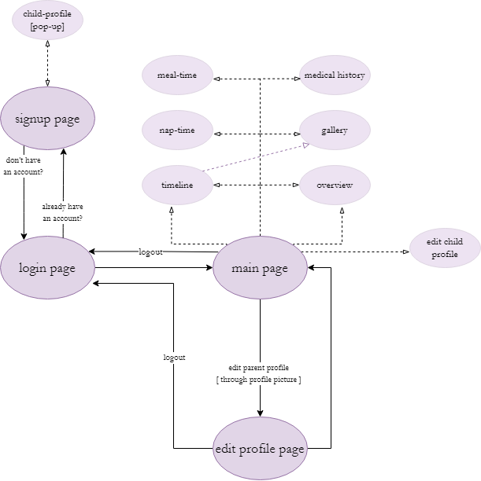
2.3 User Classes and Characteristics
2.3.1 Main Users
- authenticated users that can be:
-
- single parents with children
- families or couples with children
- caretakers such as nannies, legal guardians, other family members(ex: grandparents) that can be added later
- unauthenticated users
2.3.2 Characteristics
- Authenticated users will have access to all the app's functionalities such as managing the food and sleep schedule or medical history, uploading and sharing multimedia resources etc.
- Unauthenticated users will be able to register for an account.
2.4 Operating Environment
The developed product can be used on any device with a web browser that supports HTML5, CSS and JavaScript.
2.5 User Documentation
Users can refer to this document for in-depth explanations regarding the web application's functionalities.
2.6 Assumptions and Dependencies
The feature of sharing photos etc. on Twitter is dependent on their third party apps API. Changes in the API may result in malfunctions. Using a browser that does not support HTML5 or disabling JavaScript can result in users failing to use the web app.
3. External Interface Requirements
3.1 User Interfaces
Here is an overview of every page of the application and the functionalities each of them offers:- login page
- password
- login
- sign up
- documentation
- 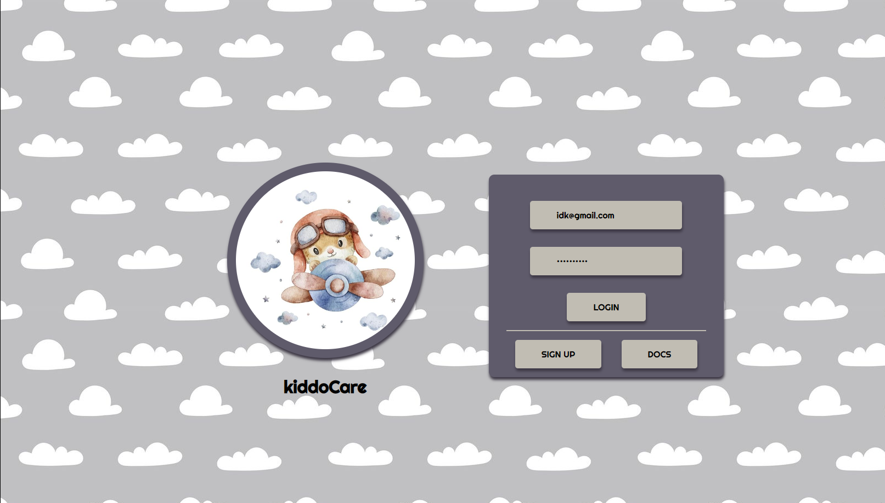
- signup page
- choose family/single parent
- username
- password
- add a picture
- information about child (name, date of birth, height, weight, picture, medical files) (can be added for multiple children)
- finish profile
- login (for already signed up)
- 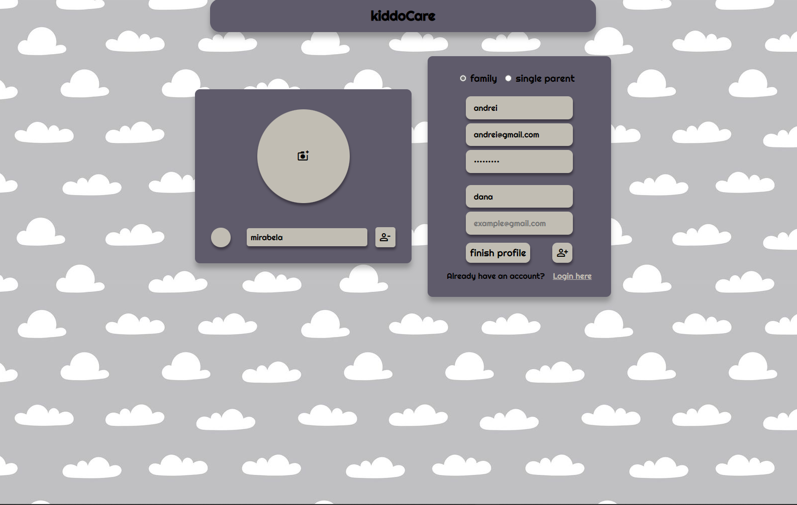 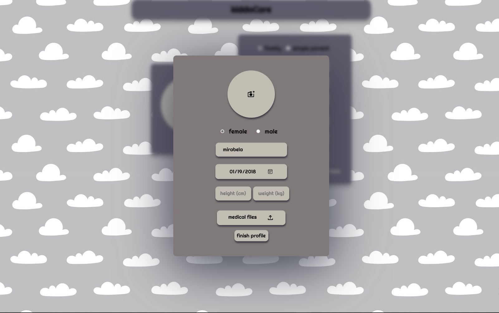
- main page
- information about the child
- sleep schedule
- feeding time
- medical history
- gallery
- likes
- edit child profile
- write in the daily journal
- add photos
- submit
- logout
- side panel
- overview of all added children
- add child
- import data
- export data
- dark mode
- 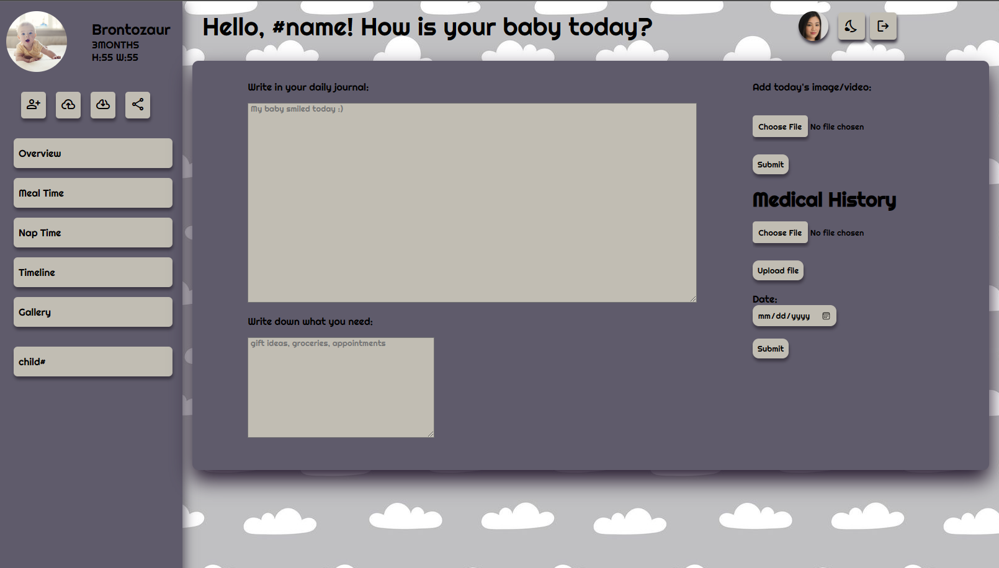 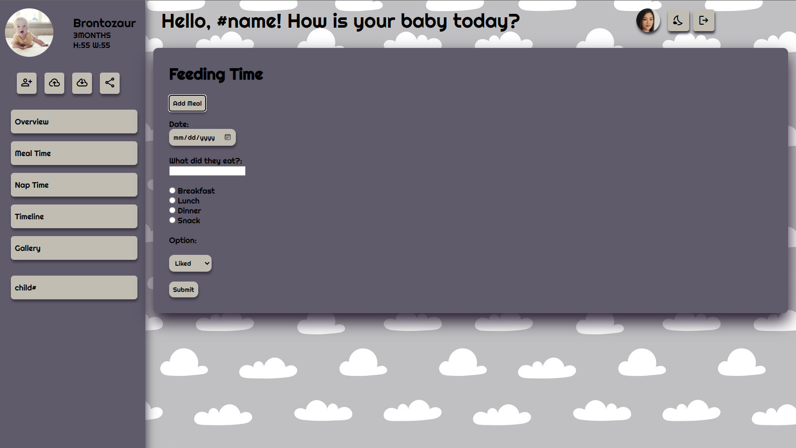
- 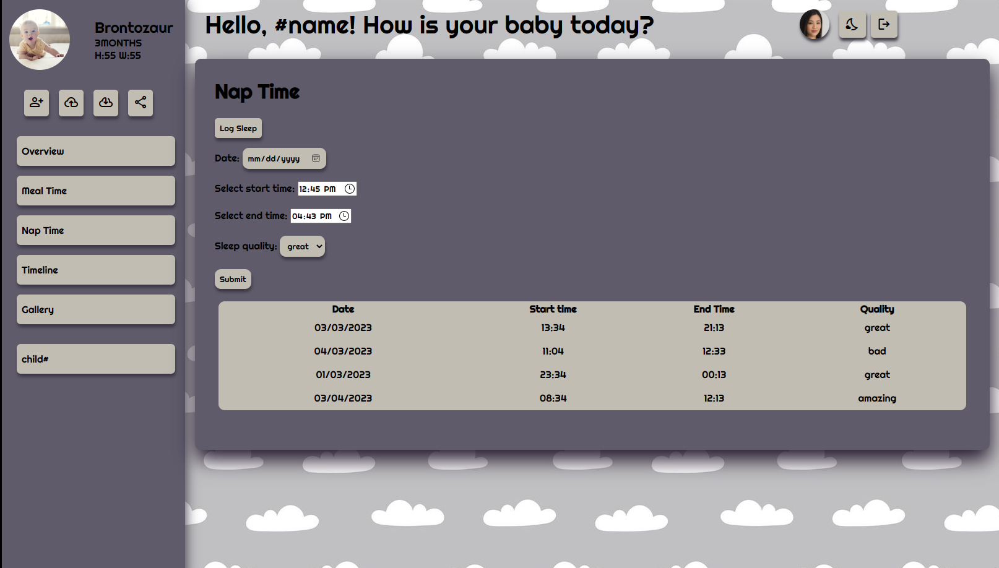 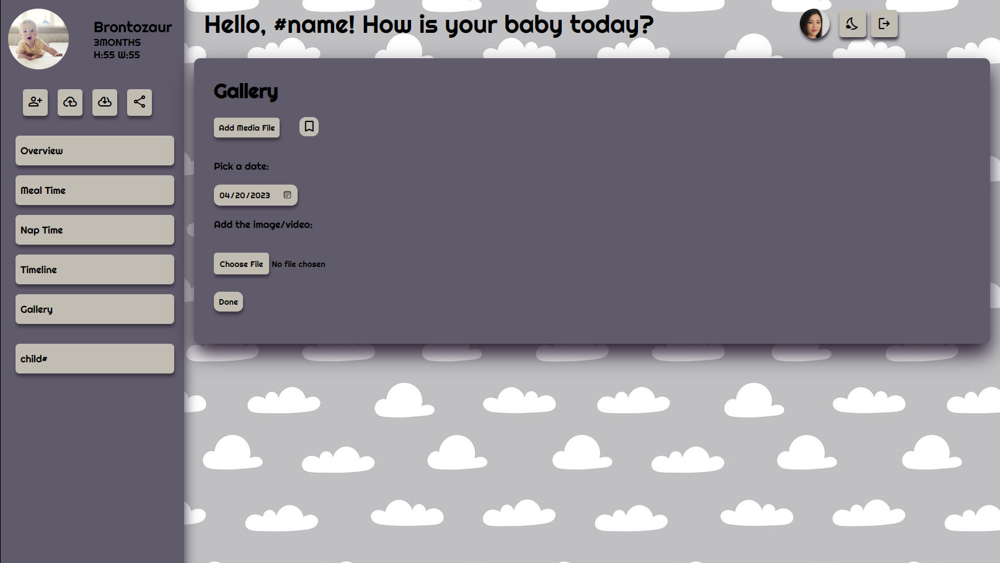
- 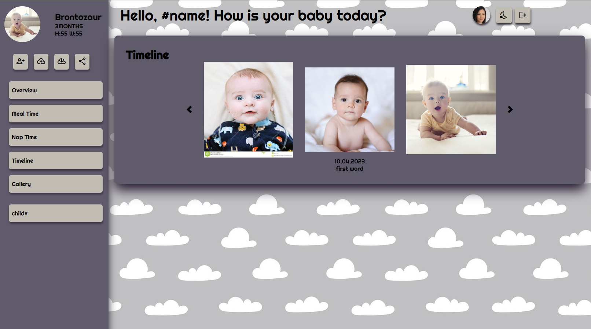 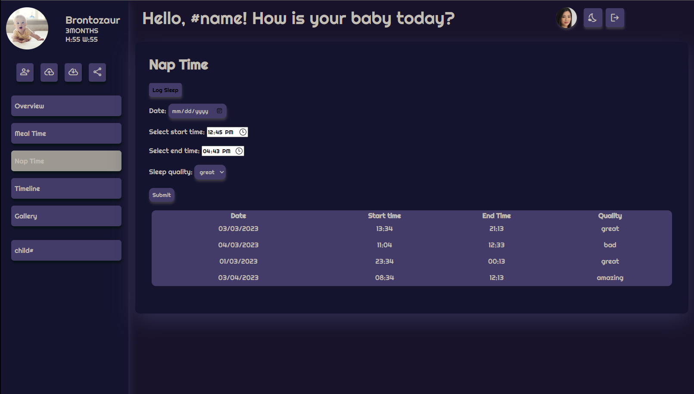
- edit account page
- change username
- change email
- add email
- change password
- add/remove child
- new profile picture
- 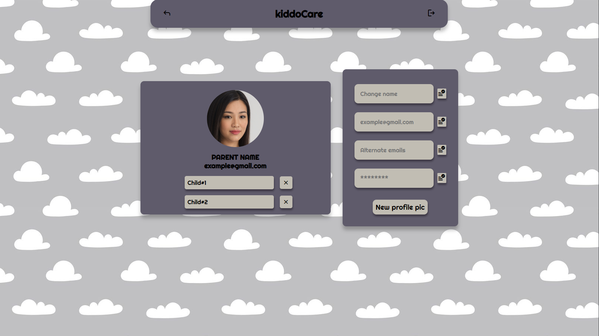
3.2 Hardware Interfaces
This product does not need any hardware interfaces; it works on any device (computers, laptops, phones etc.) that has a browser installed.
3.3 Software Interfaces
The minimum software requirements are a working browser, compatible with HTML5 and that has JavaScript enabled.
Postgres Database
The database will be used to hold the account owner's information (username, email, password), as well as the children's and an id for association with multimedia resources.3.4 Communications Interfaces
The application requires Internet connection. The communication standard that is to be used is HTTPS.
4. System Features
4.1 Account Management
4.1.1 Description and Priority
A child care taker can register for an account through an email, password and username. Through the 'Edit profile pages', the account owners can change the details, including adding more emails, as to more relatives/ caregivers to have access to the child profile as well. For login, only email and password are required. The children's profiles are added here (name, height, weight, date of birth etc.), with the possibility of being edited later. They can also delete their account. This is a medium-priority feature of the app.4.1.2 Stimulus/Response
- Once the user changes their information or their children's, the changed details will be updated in the database and will be shown on the web app.
4.1.3 Functional Requirements
- The user must be logged in to their account.
- kiddoCare must store the changed details.
4.2 Nap time
4.2.1 Description and Priority
From the user's account, they can log the time of their children's sleeping schedule, as well as the quality of their sleep. This is a main feature of the app.4.2.2 Stimulus/Response
- The user chooses an interval for the sleeping period.
- The user chooses the quality-level of their children's sleep.
4.2.3 Functional Requirements
- The user must be logged in to their account.
- kiddoCare must allow user to pick a timeframe. kiddoCare must allow user to pick quality-level from a dropdown menu.
4.3 Meal time
4.3.1 Description and Priority
From the user's account, they can log their children's meal type (breakfast, lunch, dinner), as well as what did they eat, likes, dislikes and allergies. This is a main feature of the app.4.3.2 Stimulus/Response
- The user chooses meal type.
- The user describes the meal.
- The user marks down likes/dislikes/allergies.
4.3.3 Functional Requirements
- The user must be logged in to their account.
- kiddoCare must allow user to register likes/dislikes/allergies [dropdown menu]. kiddoCare must allow user to pick meal type [dropdown menu]. kiddoCare must allow user to describe the meal [textbox].
4.4 Gallery
4.4.1 Description and Priority
From the user's account, they can upload pictures and other media resources, as well as view all other added resources. They can filter it by date and choose to bookmark their favourite moments. This is a main feature of the app.4.4.2 Stimulus/Response
- The user chooses multimedia resource and uploads it.
- The user can bookmark it.
4.4.3 Functional Requirements
- The user must be logged in to their account.
- kiddoCare must allow user to upload files [upload button]. kiddoCare must allow user to filter files by date [calendar button]. kiddoCare must allow user to mark it as favourite [dropdown menu]. kiddoCare must allow user to tag other users [textbox].
4.5 Medical
4.5.1 Description and Priority
From the user's account, they can upload files regarding the medical state of their children (such as blood test results, CT scans etc.). This is a main feature of the app.4.5.2 Stimulus/Response
- The user chooses PDF resource and uploads it.
4.5.3 Functional Requirements
- The user must be logged in to their account.
- kiddoCare must allow user to upload files [upload button]. kiddoCare must allow user to filter files by date [calendar button].
4.6 Likes
4.6.1 Description and Priority
From the user's account, they can see a timeline of their favourite moments from their children's life (photos, journal inputs - first step, graduations etc.). This is a main feature of the app.4.6.2 Stimulus/Response
- The user chooses resources and bookmarks/favourites it.
4.6.3 Functional Requirements
- The user must be logged in to their account.
- The user must have bookmarked resources.
- kiddoCare must filter by timestamp bookmarked resources (for every child).
4.7 Other features
4.7.1 Description and Priority
From the user's account, they can import/export their data under a CSV/JSON file, share their chosen multimedia resources (pictures or text snippets) on Twitter, as well as choose the theme (light/dark mode) for the web application. These constitute low priority features.4.7.2 Stimulus/Response
- The user chooses to import/export data and the format [CSV/JSON].
- The user chooses to share moments from their children's life [Twitter].
- The user chooses display settings [dark/light mode].
4.7.3 Functional Requirements
- The user must be logged in to their account.
- [1] The user must have registered data about their children. [2] The user must be logged into Twitter/ have valid Twitter credentials for logging in.
- [1] kiddoCare must recognise file type.
- [2] kiddoCare must implement an API that allows the user sharing information on Twitter, as well as validates their credentials.
- [3] kiddoCare must offer display options.
5. Other Nonfunctional Requirements
5.1 Safety Requirements
The application will ensure the confidentiality of children's health data, personal details, and family members' data. This information will be kept private and protected against unauthorized access.
5.2 Security Requirements
The users accounts are protected by a login system using bcrypt encryption of the passwords and access tokens in order to maintain their privacy and keep their data safe. Other security measures that are taken: prevention of SQL-injection attacks, blocking of multiple consecutive requests coming from a user in order to prevent application slowdown.
5.3 Software Quality Attributes
- Adaptability
- Usability
- Reliability
- Flexibility
- Maintainability